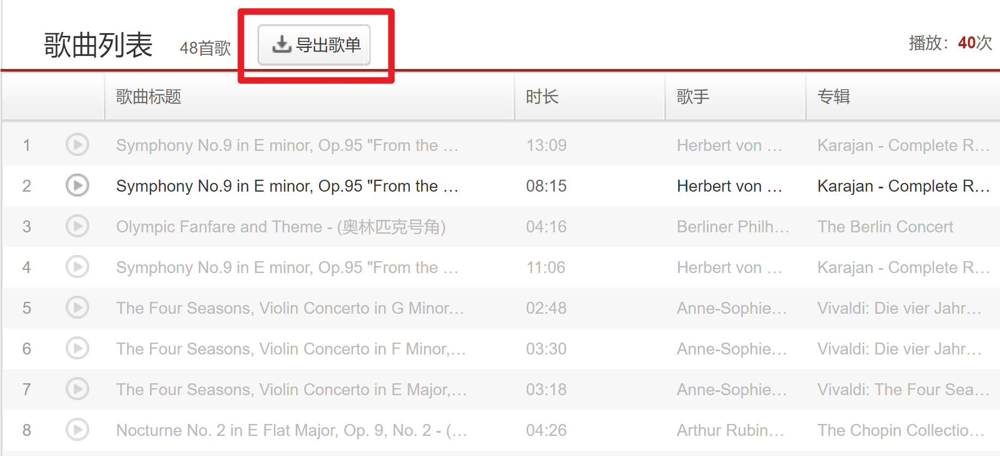

网易云音乐歌单转Spotify
人在美国留学，被网易云的定位限制版权折磨疯了，从一开始的一周一定位，到现在的一天n定位，甚至电脑版的也开始识别了定位了，实在忍不住转了spotify。不过好歹也是网易云9级玩家，存了好久的歌单得导出来。
网上扒拉了一下发现基本都是一个帖子，link（膜拜大佬）。不幸的是，貌似2022年5月份网易云更新了，但大佬并没有同步更新，所以目前测试下来该方法失效了。
不死心的我又去github上扒拉了一下，目前可行的解决方案是：
-
安装油猴脚本 TampermonkeyScript（超级好用！强烈安利！）
-
到这个网址（膜拜大佬x2）上，按照说明点击
raw获取文件地址安装脚本。 -
打开网页版的网易云音乐，在歌单上面找到
导出歌单的地方点击就可以获得一个txt文件（找不到的话就刷新一下，我一般都是直接切换歌单无法显示，刷新一下就出来了）

- 到 tune my music 中，在step2中选择
从文本，将txt文件中的内容复制出来粘贴进去，转换歌曲列表到spotify（会自动转跳spotify要登录还是授权，忘了），等着就行了
-
导入的是歌单名默认为 my playlist，需要手动修改，以及歌单的默认描述是tunemymusic的一串东西，介意的话可以删除
-
导了十几个歌单，感觉成功率还是挺高的，不过中文歌识别着实不太行，少数几个有重复识别。一般正常取名字的歌曲都可以导出，少数古典音乐和奇怪语种命名的歌曲无法识别，其他都挺好的
解决中文歌单的问题
- 在完成1-3步之后，改用spolistr导入歌曲。
- 测试1：直接copy第三步的结果，中文不再会乱码和重复，但是导入率依旧比较低，80的歌单只能导入30左右
- 测试2：删除歌手和专辑名称可以提高导入率，80的歌单导入40左右
- 测试3：删除所有乱七八糟的东西，只留下歌曲名称，找不到的歌曲属于是我手动搜也搜不到的。但是只用歌名搜会导致跳出一堆我不认识的歌手翻唱的歌曲
- 测试4：只保留歌曲名字和歌手名称，以空格做间隔，85首有28首识别不出来（正常，毕竟我手动搜也搜不到，曲库压根儿就没这歌）
测试3的matlab代码
1 | clear;clc |
测试4的matlab代码
1 | clear;clc |
- 无解了属于，反正specificity和sensitivity总有一个会低的，各取所需咯
优秀的但要钱的一体式软件
网页端：https://heart.uselesses.com/
微信公众号：红心歌单
这个网址是不知名大佬开发出来的，可以直接连接spotify和网易云音乐，但是一个账号只能免费导入一个歌单，多了就要钱了，10次导入要十几块钱，无限次导入貌似是二十几。
测试下来大佬的软件85首有22首搜索不到，所以自己瞎整的成功率还是挺高的，快乐！